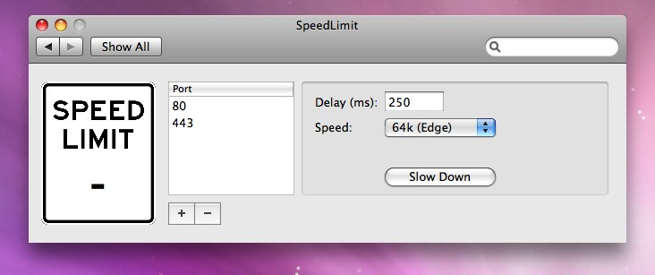

SpeedLimit is a Leopard preference pane for limiting your network bandwidth to one of a couple different speeds—768k DSL, Edge, 3G, and Dialup. This is really handy for testing your iPhone app under normal Edge network conditions in the iPhone Simulator.
